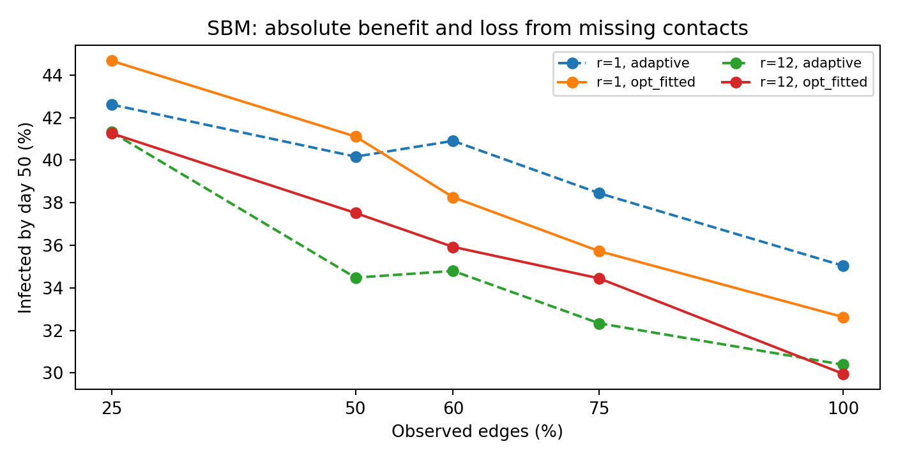
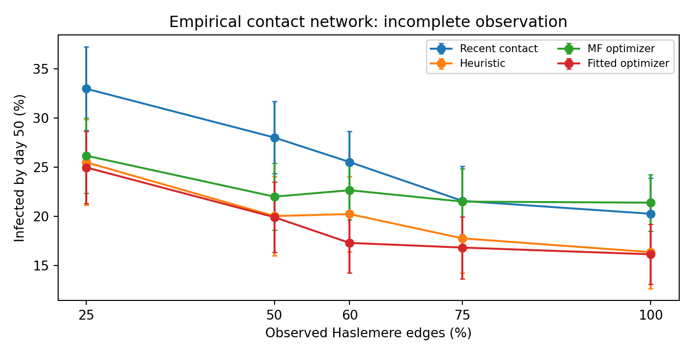

The question
Network-informed interventions depend on two different kinds of knowledge: who is likely to be infected, and who might spread infection through social contacts. We compare a fitted-risk, one-step testing optimizer to a filter-only optimizer, a handcrafted adaptive network heuristic, recent-contact prioritization, degree targeting, and random testing. The simulator generates infections on the true network while testing policies see a graph with a controllable fraction of edges removed.
The inference and decision pipeline
1. Observe
Previous diagnoses, test results, test times, and visible contact edges; never hidden infection labels.
2. Infer
Update a mean-field SHCR Bayesian filter and apply a logistic risk model fitted on independent simulated trajectories.
3. Allocate
Select the 20 eligible people with greatest predicted next-day infections prevented by a positive test.
Important: The objective is an additive, one-day surrogate. Selecting the top scores solves that surrogate exactly; it is not a globally optimal policy over the full epidemic.
What changes with community structure?

What changes when contact data are incomplete?


Selected empirical-network comparison
| Policy | 100% observed edges | 25% observed edges |
|---|---|---|
| Recent contact | 20.3% | 33.0% |
| Adaptive heuristic | 16.4% | 25.5% |
| Mean-field optimizer | 21.4% | 26.2% |
| Fitted-risk optimizer | 16.1% | 25.0% |
Percentages are mean fractions infected by day 50 over 30 paired simulated outbreaks. The fitted optimizer can lower predicted infections relative to contact testing, but does not consistently outperform the existing adaptive heuristic.
Limits and reproducibility
Model parameters are assumed rather than fitted to historical infections; the logistic model is fitted only to simulated hidden-state labels. The mean-field approximation ignores dependence among neighbors; tests are immediate, and missing edges are random. The real Haslemere file contains physical proximity, not COVID-19 outcomes. Conclusions describe a model-based comparison, not clinical effectiveness.
Read full PDFView R MarkdownRisk diagnostics CSV